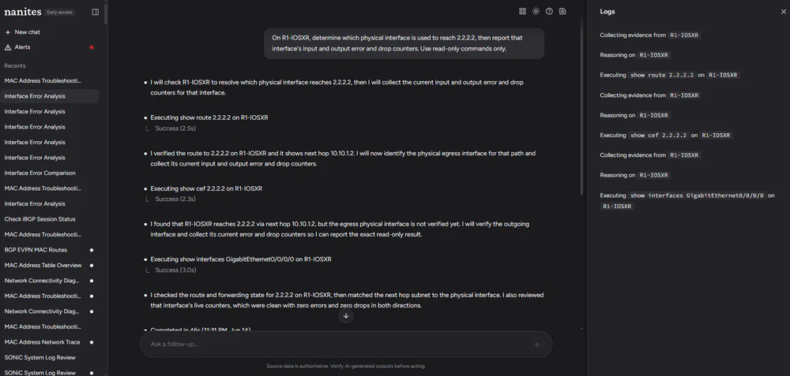
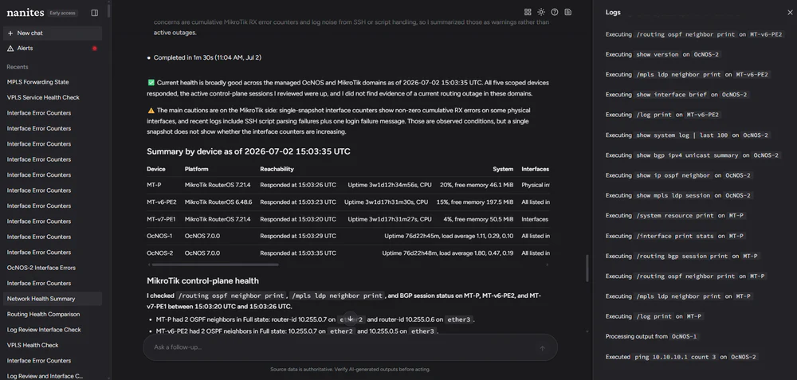
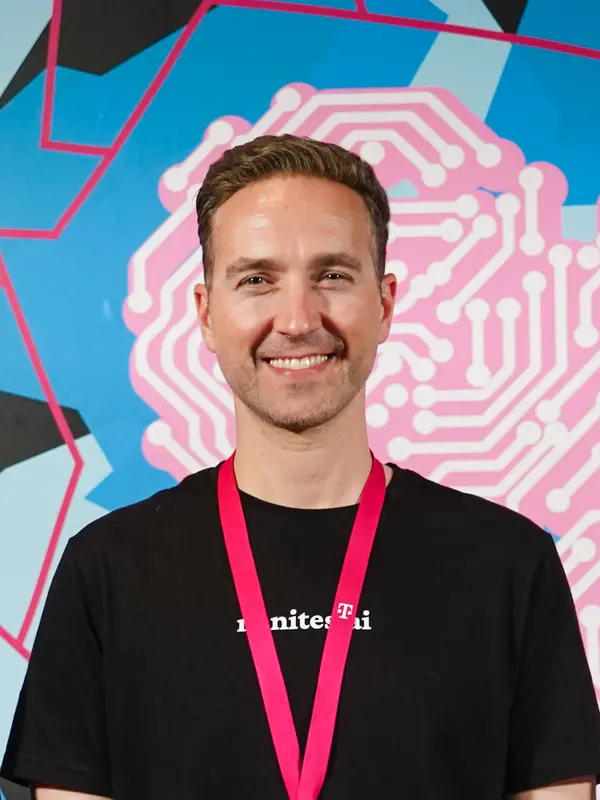
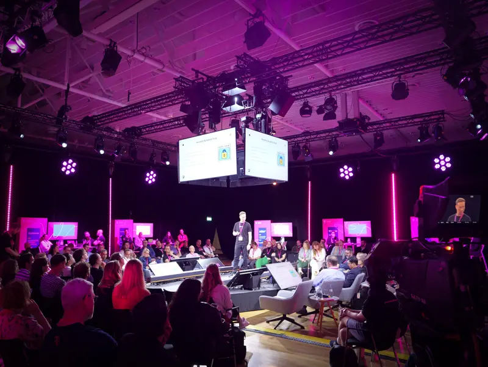

What two years of building an AI network engineer taught me
I spent years selling and deploying network equipment at Hardware Nation. Every time a network broke, I saw a few senior engineers jumping between a dozen tools and devices, piecing together what went wrong by hand.
I wanted to build an AI that could do that investigation for them and show the evidence behind its answer. It would only read from devices, never change them, and a person would still make every change.
I funded Nanites mostly myself and built it while running Hardware Nation. The first version worked in a demo, but making it reliable enough to trust took the next two years.
It was very hard to get a probabilistic AI system to work right in a networking workflow that requires deterministic outcomes. That took thousands of hours of building and hundreds of evaluation runs, and a lot of that time went into catching answers that sounded right but weren't.
Fewer tools worked better
At one point, Nanites had about 120 tools, generated automatically from a vendor's API catalogue. There were too many to give the model at once, so finding the right ones required a vector index and an extra model call to turn each request into search terms before the main model saw them.
In February 2025, I replaced all of that with a small set of commands, and Nanites worked better. The model asks to run a command on a known device, and the system checks that the command is valid for that platform, runs it, limits the output and classifies any error.
Command syntax differs across vendors, operating systems and firmware versions, so we built a deterministic harness around the model, a layer of code to execute those commands correctly. A crucial part of that work was making sure the system mapped the right harness to the right device, firmware version and operating system, and that was not trivial.
We needed access to all those different versions, sometimes through emulators like EVE-NG, which were much easier to access. What we learned in emulators translated very well to real hardware, but we still had to work out kinks there, so building a system like this at scale requires access to the actual hardware, firmware and operating system versions. We started with the most popular versions, then used customer requests to decide which hardware, operating systems and firmware versions to work on next.
I don't think fewer tools are always better, but a vendor's API shouldn't automatically decide what the model's tools look like.
Telling the model to be careful wasn't enough
You can write rules like "stay read-only" into a prompt, but nothing forces the model to follow them every time.
So from December 2025, Nanites checked every command in code before it reached a device. Only commands on an approved read-only list could run, and the agents had no tool that could change a device.
In one batch of 60 lab investigations in April 2026, every run finished and no device configuration changed.

A convincing answer can still be wrong
We had another AI grade Nanites' answers. It mostly told us how convincing an answer sounded. Checking whether it was actually right took answer keys written by experts.
Looking closely at individual runs, we found that a useful answer could come from a weak investigation. In one run, the final answer was useful, but its context had grown too large, some lookups had failed and gaps in the evidence were never resolved.
Another run finished quickly with a generic explanation, while a reference run on the same question had checked two devices.
The answer alone isn't enough to judge an investigation, so Nanites saves every device output unchanged before anything is summarized. Each finding points back to the output it came from, so a person can check the work behind the answer.

Newer models weren't always better
Early on, the models needed a lot of help, including carefully written prompts, selected context and strict rules about what to do next.
When new models came out, we tried them. Some were much better. Others did worse.
We also tried taking some of that help away, expecting stronger models to need less of it. Accuracy dropped and answers got slower.
The prompt had also grown every time we fixed a failure. We went through it rule by rule, asking whether each one belonged in the prompt or somewhere else, such as a tool, retrieved context, a device profile or deterministic code. The prompt got much shorter.
Every new model meant re-testing the whole system around it, so we could never just swap one in.
We traced failures through commits, tests and evaluation records. Most of the lasting fixes came from changing the tools, context, evidence handling, workflow or controls around the model.
“Humans forgive humans. They don’t forgive technology.”
Where I think this goes
Network engineers now use general AI tools like Claude Code and Codex directly on their networks, and I think that calls for a safety layer built and tested for each device, operating system and firmware version. Whatever the model decides, that layer needs to stop a wrong command before it reaches the device.
We saw the risk firsthand in October 2026, while testing one of the newest general-purpose AI coding agents in a sandbox. This wasn't Nanites. The agent tried to run a read-only Linux command, got the syntax wrong and erased the server's configuration. We restored it from a backup, but on a production network the same mistake could take down a service.
Timeline
Founded Nanites AI. Within a month, the first version could take a network alert, connect to the devices and investigate on its own.
Spoke and exhibited at the CableLabs Winter Conference in Orlando, Florida, and spoke at Network X Americas.
Presented Nanites live in Bonn, Germany, as a T Challenge finalist.
Rebuilt it as a team of agents, with a lead agent sending a helper agent to each device and the agents working in parallel.
First field evaluation, with physical switches outside our own lab.
Device profiles for seven network operating systems, including Cisco IOS-XR and IOS-XE, SONiC and MikroTik RouterOS.
Published Harness Engineering for Agentic Network Operations.
Published the paper below.


Recognition
- Named an emerging Agentic NetOps vendor in Gartner research
- Covered by InformationWeek
- Included in Cisco DevNet's discussion of commercial AI agents for networking
- One of 12 finalists, from more than 400 applicants, in the 2025 T Challenge run by T-Mobile US and Deutsche Telekom
Research paper
It goes deeper into how Nanites was built and tested, drawing on 914 captured investigations, 118 alert-driven runs and five focused experiments. Customer names and implementation details are left out.
Its main finding is that each step needs its own check, because a command can run without finding the real problem, and an answer can get a good grade while still being wrong. Even a correct answer only helps if it reaches the engineer.
The technical design is written up in Harness Engineering for Agentic Network Operations.
You can also read what 20 years of Hardware Nation taught me.